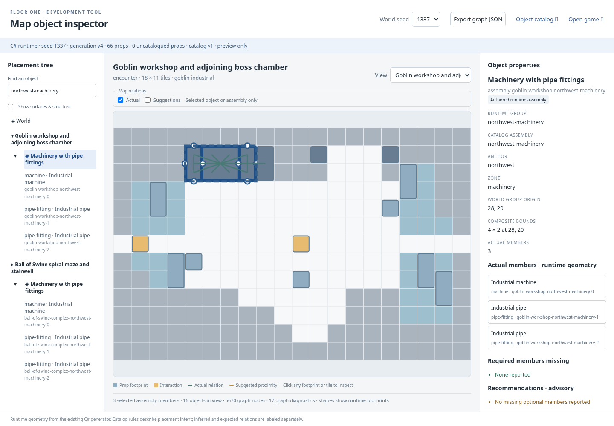
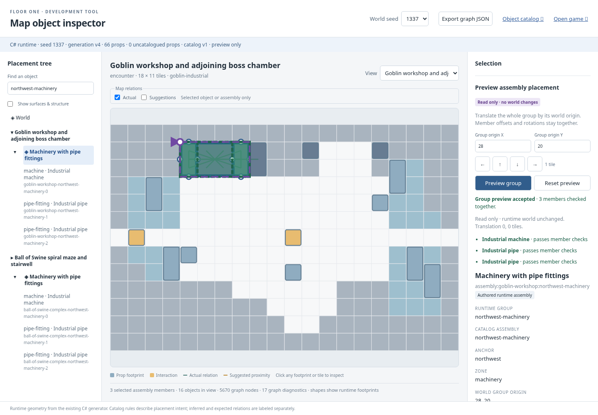

Seed 1337 · same authored workshop assembly. Baseline has selection only; final previews every member together. Runtime world and export remain unchanged.


Nonzero accepted, rejected overlap/bounds, authored underlay and mobile captures are in final/. Gameplay workshop/boss captures use fixed timestamp and camera framing; baseline and final PNG hashes match byte for byte.